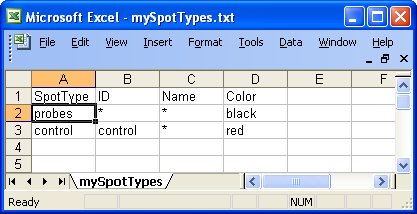

Custom Quality Control for Spotted Arrays
April 18, 2008
Agnes Paquet1, Andrea Barczak1, (Jean) Yee Hwa
Yang2
1. Department of Medicine, Functional Genomics Core Facility,
University of California, San Francisco
paquetagnes@yahoo.com
2. School of Mathematics and Statistics, University of Sydney, Australia
Content
ArrayQualityprovides
a flexible framework for assessment of hybridization quality. Many of
the functions can be customized to better suit user's
needs. For example, arrayQuality is
currently using look-up tables adapted to hybridizations performed in the
Functional Genomics Core Facility at UCSF. Depending on your data, you may find
that the probes defined as controls in arrayQuality are not
present on your array, leading to NAs in the comparative boxplot, or you may be
working with a genome for which we are not providing references. In this section, we will describe how to:
- Define your own controls in gpQuality
- Use your own collection of good quality slides for quantitative assessment of the comparative boxplot part of gpQuality
- Define a new quantitative quality measure in the comparative boxplot
All example code will be
provided for GenePix data format, but the same functionalities are
available for Agilent or Spot data format.
Warning:
Modifying the default settings requires a good understanding
of two-color array design and some programming experience in R. Only
more advanced users should use the functionalities described in
this section. Other users should start by first using default
functions for general hybridization, as described in the basicQuality
user's guide, available from the main online help page.
1. How to specify your own set of controls or spot types in gpQuality
gpQuality has
several arguments that you can modify in order to use your own spot types or
your own collection of good slides. gpQuality arguments are listed
below:
gpQuality(fnames = NULL,
path = ".", organism = c("Mm", "Hs"),
compBoxplot = TRUE, reference
= NULL,
controlMatrix = controlCode, controlId = c("ID", "Name"),
output = FALSE, resdir =".", dev= "png", DEBUG =
FALSE,...)
To
use your own set of spot types (i.e. controls...): you will need to change controlMatrix and/or
controlId.
The spot types currenlty used in arrayQuality are defined in
a 2-column matrix called controlCode.
Pattern
|
Name
|
Buffer
|
Buffer
|
Empty
|
Empty
|
EMPTY
|
Empty
|
AT
|
Negative
|
M200009348
|
Positive
|
M200003425
|
Positive
|
NLG
|
con
|
Table 1: Examples of controls used in
arrayQuality
To define your own spot types, you will need to
replace the default values in controlCode with the controls present on your arrays. The easiest way to
do it is to create a tab-delimited text file named SpotTypes.txt, and read it
into arrayQuality using the function readcontrolCode. It is also possible to
create a new controlCode matrix directly.
1.1 If you want to use a Spot
Types file:
A spot types file is a tab-delimited text file which allows
you to identify different types of spots from the gene list. It should contain
at least a column named SpotType where all different spot types are listed and
one or more other columns, which should have the same names as columns in the
GAL file, containing patterns or regular expressions sufficient to identify the
spot-type. For more information, you can refer to the limma package
user's guide.
Warning: You will need
to include a spot type named probes!!
Below is an example of spot
types files for the swirl dataset. In this case there are only two types of
spots, probes and controls.

Example of spot types file
To
read the new spot types in arrayQuality:
- Create your spot types
file.
- Find which column of the file contains probes identification for each
type. In the example Figure 8, it is the "ID" column. You will need to pass this
column name as argument at the next step.
- Read the spot types files using
the readcontrolCode function.
>
controlCode <- readcontrolCode(file=”mySpotTypes.txt”,
controlId="ID")
- Find which column of the gpr
file can be used to identify your new spot types. It is typically the "ID" or
the "Name" column.
- To generate both types of plots: call gpQuality specifying
your new controlCode matrix in controlMatrix and
which column is used to define your spot types in controlId.
>
result <- gpQuality(controlMatrix = controlCode, controlId=”Id”)
1.2 If
you want to create a new controlCode matrix
directly
You will need to create another controlCode table
containing two columns as well, and then overwrite the default controlCode loaded
with arrayQuality. The controlCode matrix must have 2 columns:
-
A column named "Pattern" containing your control IDs
- A column named
"Name", describing what king of control is each probe (in particular what are
Positive, Negative, Empty controls)
You can do it by creating a tab
delimited text file and read it in R after loading arrayQuality:
>
library(arrayQuality)
> mycontrolCode <-
as.matrix(read.table("mycontrolCode.txt", sep="\t",
header=TRUE, quote="\"", fill=TRUE)))
Then, pass your new matrix as
argument when calling gpQuality. You can specify which column of the gpr file
contains probes identifiers in the controlId arguments (typically, it would be
"Id" or "Name").
> results <- gpQuality(controlMatrix =
mycontrolCode, controlId = "ID")
2. How to use your own collection of good quality reference slides
The
comparative boxplot generated as part of the general hybridization
diagnostic plot can be used to detect outlier arrays within in a large
dataset or if you want to study hybridization quality for other genomes.
This is done by comparing some quantitative statistics from each array
to a range of values corresponding to good quality arrays, which are determined over a collection of "good quality" arrays
selected from the same dataset. To use your own collection
of good slides: you will need to modify a look-up table named reference passed in the arguments of gpQuality.
To generate your
own reference:
1. Gather the slides of "good" quality you would like
to use as reference in a directory, for example "MyReferences". Slides can be
from different print-runs.
2. Change your R working directory to
"MyReferences"
3. Load arrayQuality
package by typing library(arrayQuality) in R
4.
Create your reference quality measures by typing:
> myReference <-
globalQuality()
5. Change R
working directory to the directory containing slides you would like to test, as
described. You can only compare slides from the same print-run
here. If you have an experiment using 2 print-runs, you will need to
run gpQuality 2 times.
6. Run gpQuality using the reference
measures and the scaling table you have generated:
> results <- gpQuality(reference =
myReference)
Other gpQuality arguments described above can
also be applied here.
3. How to define your own quantitative measures for the comparative boxplot
We have selected a set of 15 measures that can be used to verify
quantitatively the quality of an array. These measures are described in
detail in the basicQuality guide, that can be accessd from the main
help page of the package. This part can be customized a step
further, as it is possible to define your own set of quantitative
measures. The quantitative boxplot is generated as follows:
- Read in the array data from the image analysis software input. This can be done by calling the function readGPR, which stores specific columns from the input file in a list.
- Calculate the quantitative measures and statistics you need for
quality assessment. The is done one slide at a time using the function slideQuality. You will need to create your own slideQuality function if you prefer to use your own set of quantitative measures.
- Select a collection of "good quality" arrays to use as reference.
- Estimate the range of each measure corresponding to "good
quality" arrays by repeating steps 1 and 2 for each array in your
collection. Save as your new reference (see section 2 above for details).
- Draw the comparative boxplot for each slide using your new reference.
- Estimate the QC score for your array using the qcScore function.
The new slideQuality function must call the same argument as
slidequality, and return a matrix. Here is an example R code for such a
function.
The gprData argument is the result you get from running readGPR on your array. readGPR
reads in specific columns from the gpr file only, and returns the
results in a list. Depending on your needs, you may need to create your
own reading function as well. Then, you can use the elements from gprData
to calculate the QC measures you are interested in and return them in a
matrix. This example function returns 4 quality measures: the range of
red forground, the range of green foreground, the median spot area and
the spot radius.
mySlideQuality <- function(gprData = NULL, controlMatrix = controlCode, controlId = c("ID", "Name"), DEBUG = FALSE, ...)
{
Rf <- log.na(gprData[["RfMedian"]], 2)
Gf <- log.na(gprData[["GfMedian"]], 2)
rRf <- range(Rf, na.rm = TRUE)
rangeRf <- rRf[2] - rRf[1]
rGf <- range(Gf, na.rm = TRUE)
rangeGf <- rGf[2] - rGf[1]
spotArea <- median(gprData[["spotArea"]], na.rm = TRUE)
spotRadius <- round(sqrt(spotArea)/pi)
sortedMeasures <- c("range RF", "range GF", "spotArea", "spotRadius")
sortedRes <- c(rangeRf, rangeGf, spotArea, spotRadius)
numResult <- as.matrix(sortedRes)
rownames(numResult) <- sortedMeasures
colnames(numResult) <- gprData[["File"]]
return(numResult)
}
Example
1) Create mySlideQuality (as above)
2) Run the following R code:
> datadir <- system.file("gprQCData", package="arrayQuality")
> gprData <- readGPR(fnames="9Mm137.gpr", path=datadir) ## read gpr file
> res = cbind(mySlideQuality(gprData),mySlideQuality(gprData) + 2, mySlideQuality(gprData)+4) ## create dummy reference
> res1 = mySlideQuality(gprData) ## run the new function of the slide
> qualBoxplot(arrayQuality = res1, reference = res) ## draw the boxplot
> qcScore(arrayQuality = res1, reference = res) ## calculate QC score